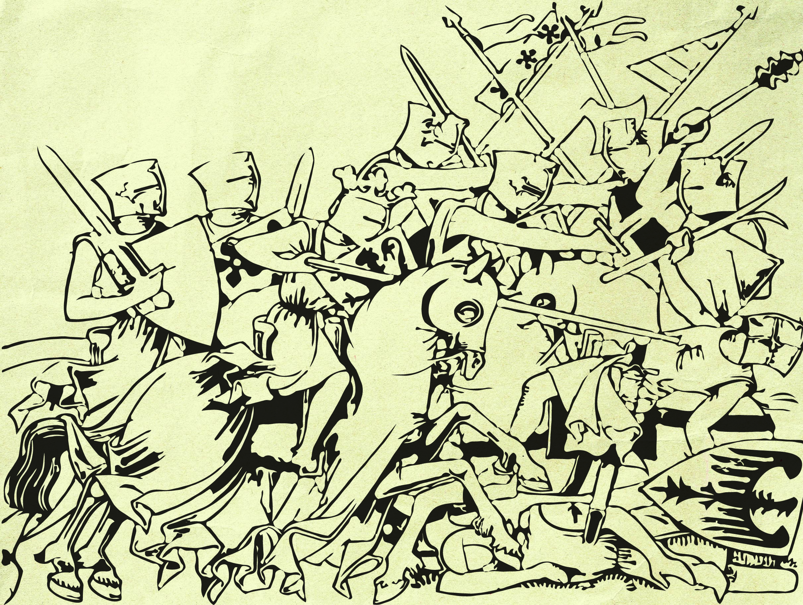

Medieval Weapons
This site displays a collection of medieval weapons from across Europe and the Middle East. Roughly categorized by type of weapon and period of use. Explore each category as you please!
-

Swords & Blades
From the knight’s one-handed sword to the Anglo-Saxon sax: the edged weapons carried across medieval Europe and the Middle East.
-

Polearms
Blades, spikes and hooks on long shafts, giving foot soldiers and riders reach over their opponents.
-

Bows
Bows, crossbows and the sling let soldiers strike from a distance.
-

Blunts & Other Handhelds
Hammers, maces and flails that crushed and dented armour instead of cutting through it.